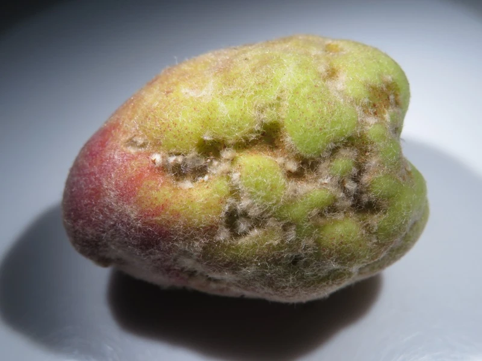

果实畸形
果形歪扭，皮还可以是完整的。皮上的斑、霉或软腐要分开记。

先看哪里
看畸形是否集中在果实一侧，同时记录开花期间的天气和叶片变化。
可能原因与下一步
授粉不均、温度波动和虫害都可能影响发育。对照同株后续果实，结合品种判断。
怎样区分相似问题
种子发育不均可使果实一侧偏小。若凹陷侧有疤痕或刺孔，也要考虑幼果受伤。多查看几簇花序；只凭一颗畸形果，很难判断整片种植区的情况。
先看最幼嫩的果实，以免成熟后的变化遮住最初的伤痕。以草莓为例，可比较隆起侧和发育不足一侧的籽粒间距。成功授粉的籽粒周围果肉才会充分生长，所以花期连续低温阴雨后，同一颗草莓的两侧可能长得不一样。
现在可以做什么
比较同一批花结出的几个果实，回想开花时是否遇到低温或连雨，再检查附近幼果有没有新鲜取食痕。
几颗草莓的果尖都发硬、籽粒密集时，可检查开放的花朵里有没有盲蝽。在浅色托盘上轻拍花序，趁细小且行动敏捷的虫子还没跑掉时拍照。霜冻后有些花心发黑，也是一条线索，即使旁边的花看起来正常。
接下来观察什么
已成形的果实通常会保留原有形状。若下一批果实也畸形，分别拍下盛开的花、幼果和成熟果的切面作对照。
记下天气转好后开放的一批花。如果它们结出的果实长得均匀，检查时也没发现正在取食的虫，就能借开花时间缩小上一批果实畸形的原因范围。
若草莓偏斜，看看表面细小的瘦果。局部膨大不足时，该侧瘦果会挤在一起。先与正常饱满的一侧对照，再判断果肉是没长起来还是被啃掉。